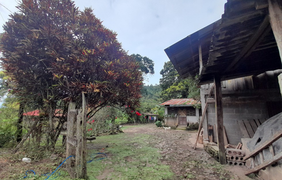
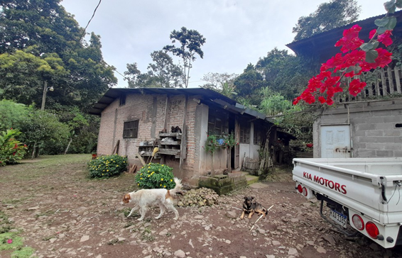
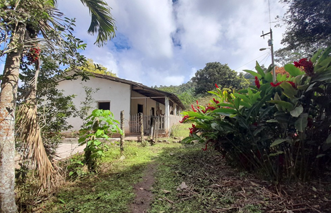
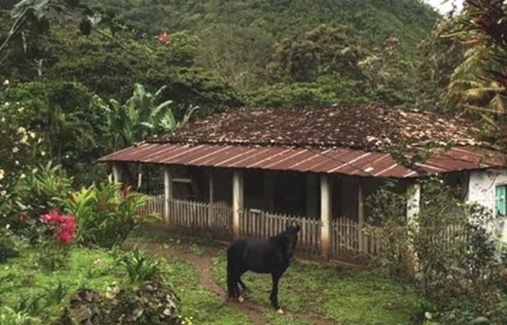
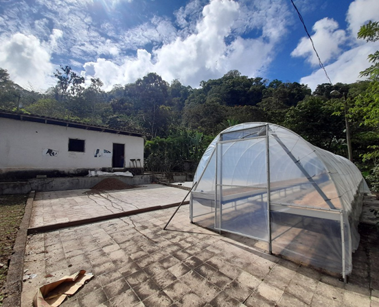
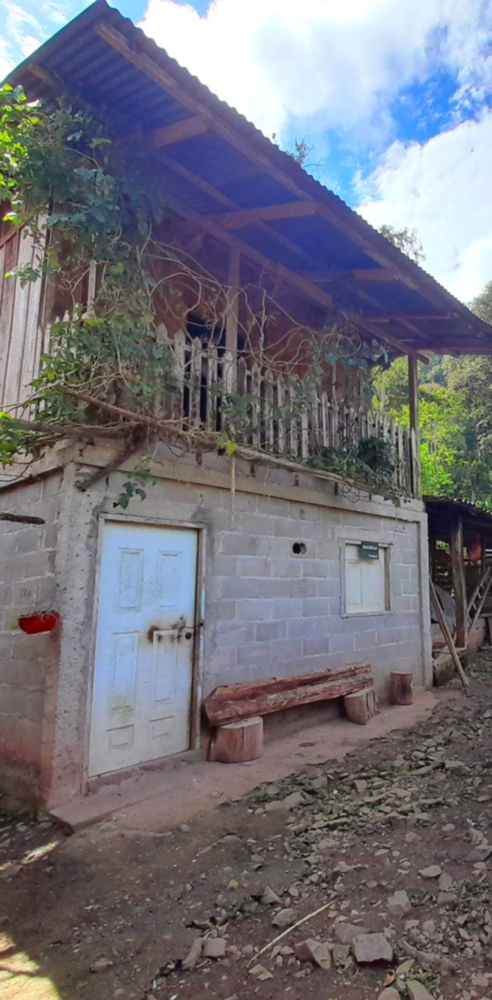
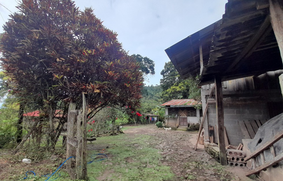
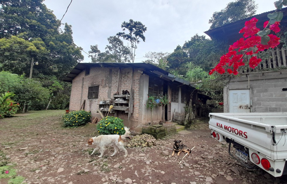
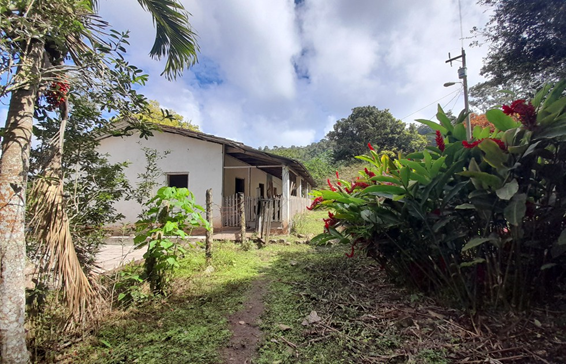
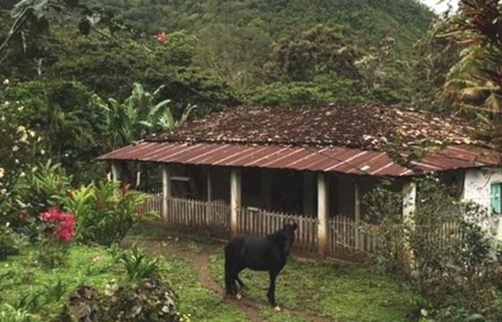
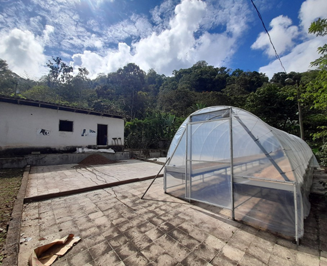
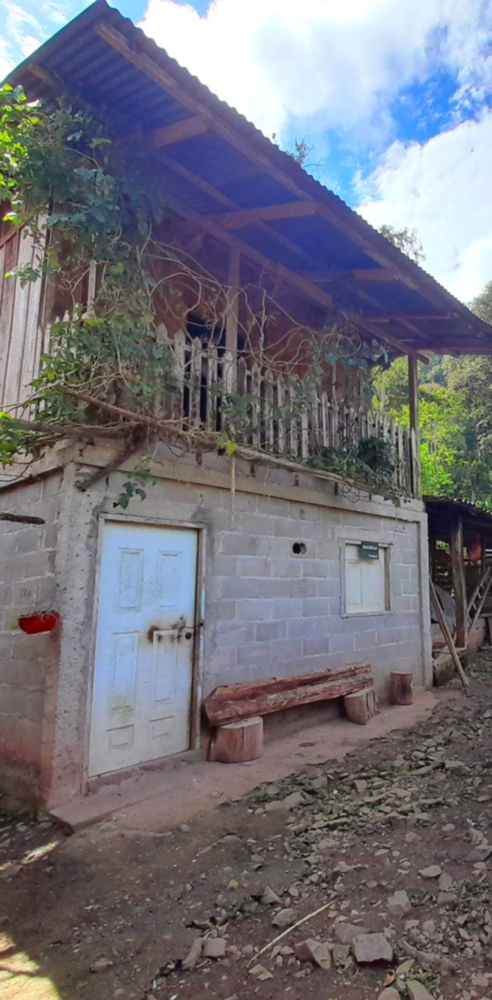


Eco-Lodge / Hotel de montaña / Proyecto multipropósito
Dirección: Trinidad, Santa Bárbara
Extensión: 102.21 manzanas
Ideal para desarrollo turístico (eco-lodge, hotel de montaña o glamping) sin descartar uso multipropósito. Cuenta con fuentes de agua, electricidad con transformador propio e infraestructura existente.
Consultar por WhatsApp
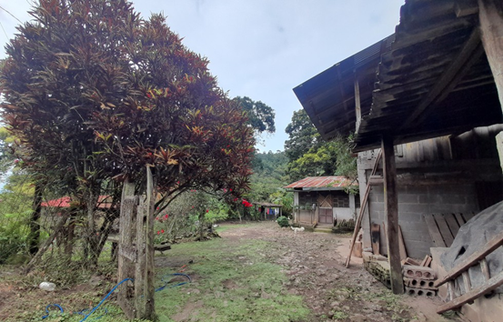
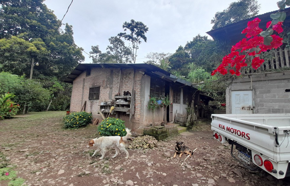
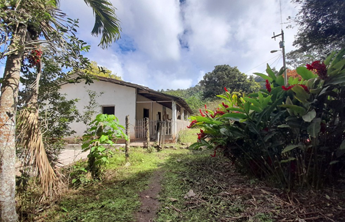
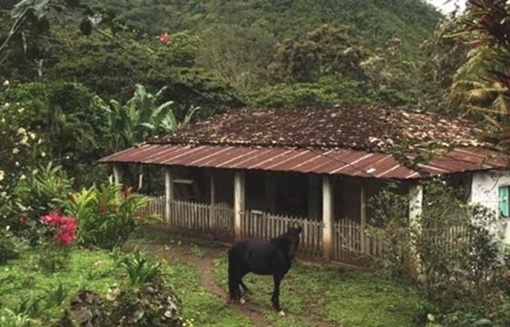
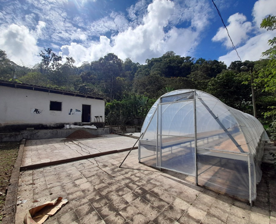
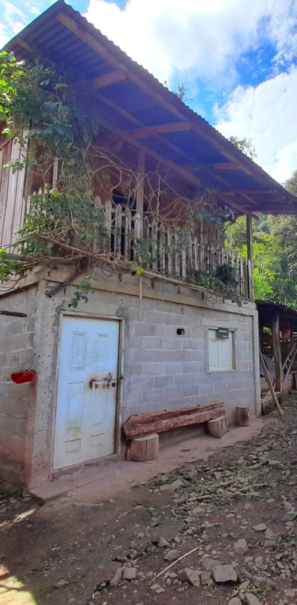